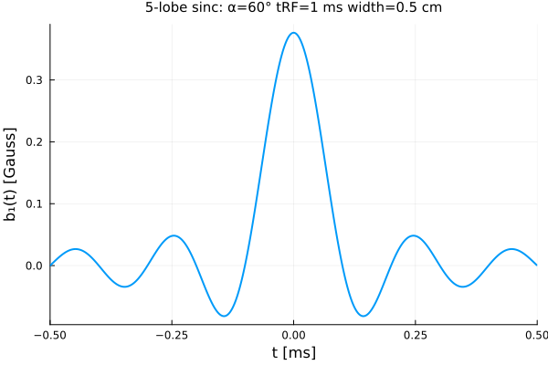
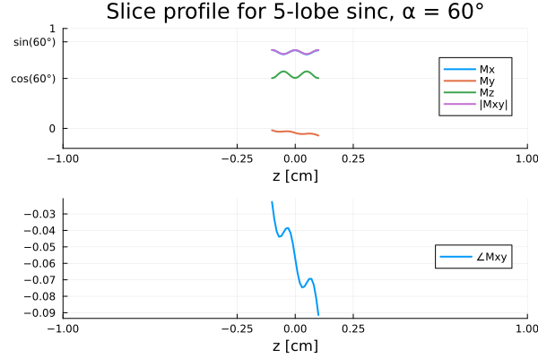
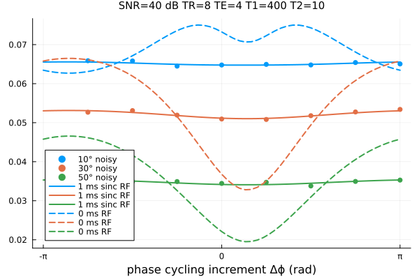
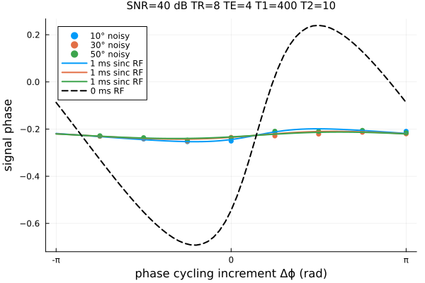

Slice selective excitation
This page illustrates slice-selective excitation in MRI using the Julia package BlochSim and explores slice-profile effects on bSSFP signals.
This page comes from a single Julia file: 02-slice.jl.
You can access the source code for such Julia documentation using the 'Edit on GitHub' link in the top right. You can view the corresponding notebook in nbviewer here: 02-slice.ipynb, or open it in binder here: 02-slice.ipynb.
Setup
First we add the Julia packages that are need for this demo. Change false to true in the following code block if you are using any of the following packages for the first time.
if false
import Pkg
Pkg.add([
"BlochSim"
"InteractiveUtils"
"LaTeXStrings"
"LinearAlgebra"
"MIRTjim"
"Optim"
"Plots"
"Random"
])
endTell this Julia session to use the following packages for this example. Run Pkg.add() in the preceding code block first, if needed.
using ADTypes: AutoForwardDiff
using Optim: optimize # must precede BlochSim for extension
using BlochSim: GAMMA, Gradient, GradientSpoiling, Position, Spin, SpinMC
using BlochSim: InstantaneousRF, RF, b1_gauss, rf_slice
using BlochSim: excite!, spoil!
using BlochSim: bssfp, real_imag, signal, snr2sigma, fit_signal
using LinearAlgebra: dot, norm
using MIRTjim: prompt
using Plots: default, gui
using Plots: annotate!, plot, plot!, scatter!, scatter3d!, text
using Random: seed!
default(titlefontsize = 10, markerstrokecolor = :auto, label="", linewidth = 2)
seed!(0);The following line is helpful when running this file as a script; this way it will prompt user to hit a key after each figure is displayed.
isinteractive() || prompt(:draw);Array of spins
For a range of z-positions to examine slice profile
Mz0, T1_ms, T2_ms, Δf_Hz = 1, 400, 10, 9 # tissue parameters
zpos = range(-1, 1, 201) # z positions (cm)
zpos = range(-0.1, 0.1, 21) # z positions (cm) # todo: narrow for testing
zfov = only(diff([extrema(zpos)...])) # 2 cm
make_spins(Mz0, T1_ms, T2_ms, Δf_Hz) = map(zpos) do z
pos = Position(0, 0, z)
Spin(Mz0, T1_ms, T2_ms, Δf_Hz, pos)
end
spins = make_spins(Mz0, T1_ms, T2_ms, Δf_Hz);RF pulse for slice-selection
tRF_ms = 1
nlobe = 5
α_deg = 60 # flip angle ° (somewhat large for testing)
α_rad = deg2rad(α_deg)
slice_width = 0.5 # cm
rf1, rephasing1 = rf_slice(tRF_ms ; α_rad, nlobe, slice_width)
nsamp = length(rf1.α)
wave = real(rf1.α .* cis.(rf1.θ)) * b1_gauss(1, rf1.Δt) # convert rad to gauss
t = ((0:(nsamp-1))/nsamp .- 0.5) * tRF_ms # [-tRF_ms/2, tRF_ms/2)
prf = plot(t, wave,
xaxis = ("t [ms]", (-1,1) .* (tRF_ms/2), ),
yaxis = ("b₁(t) [Gauss]", ),
title = "$nlobe-lobe sinc: α=$(α_deg)° tRF=$tRF_ms ms width=$slice_width cm",
)
prompt()Excite the spins with the RF, then apply rephasing gradient
map(spins) do spin
excite!(spin, rf1)
spoil!(spin, rephasing1)
end;
signal1 = signal.(spins);Plot slice profile
function plot_profile(spins)
mx = map(spin -> spin.M.x, spins)
my = map(spin -> spin.M.y, spins)
mz = map(spin -> spin.M.z, spins)
mmag = @. sqrt(mx^2 + my^2)
mpha = @. atan(my, mx)
xaxis = ("z [cm]", (-1,1), [-1, -slice_width/2, 0, slice_width/2, 1])
ytick = ([0, cos(α_rad), sin(α_rad), 1],
["0", "cos($(α_deg)°)", "sin($(α_deg)°)", 1])
pmag = plot(; xaxis, yaxis = ("", (-0.2,1), ytick), legend = :right)
plot!(zpos, mx, label = "Mx")
plot!(zpos, my, label = "My")
plot!(zpos, mz, label = "Mz")
plot!(zpos, mmag, label = "|Mxy|")
ppha = plot(; xaxis, legend = :right)
plot!(zpos, mpha, label = "∠Mxy")
return plot(pmag, ppha; layout = (2,1),
plot_title = "Slice profile for $nlobe-lobe sinc, α = $(α_deg)°",
)
end
pp1 = plot_profile(spins)
prompt()The simulation shown above is similar to Fig. 5 of Pauly et al. 1989, but perhaps a bit worse due to the short T2 considered here. Pauly notes that minor gradient adjustments could lead to better refocusing. This simulation ignores gradient slew-rate constraints that must be considered in practice.
Examine slice-profile effect on qMRI with bSSFP
kappa = 1 # also estimate the B1+ factor
xt = (; Mz0, T1_ms, T2_ms, Δf_Hz, kappa) # tuple
x = collect(Float64, xt) # unknowns in vector
TR_ms, TE_ms = 8, 4; # bSSFP scan parametersHand-crafted scan "design" with various phase-cycling increments and flip angles:
Δϕ_rads = (1:8)/8 * 2π .- π # phase-cycling factors
α_degs = [10, 30, 50] # flip angles
α_rads = deg2rad.(α_degs)
design = Iterators.product(Δϕ_rads, α_rads)
num_scans = length(design) # number of different scans24Helper for InstantaneousRF bSSFP signal model
_bssfp0(x, Δϕ_rad, α_rad) =
bssfp(x[1:4]..., TR_ms, TE_ms, Δϕ_rad, InstantaneousRF(x[5] * α_rad));Helper for bSSFP model with slice-selective RF pulse.
- Here we must sum across spins the effect of each (Δϕrad, αrad) pair.
- This version models flip-angle dependent slice profile effects.
scale1 = diff(zpos)[1] * zfov / slice_width / 2 # todo: arbitrary factor?
scale1 = 1/length(zpos) # todo
function _bssfp1(x, Δϕ_rad, α_rad)
rf, rephasing = rf_slice(tRF_ms; α_rad = x[5] * α_rad, # kappa
nlobe, slice_width,
)
spins = make_spins(x[1:4]...)
return scale1 * sum(spins) do spin
bssfp(spin, TR_ms, TE_ms, Δϕ_rad, (rf, rephasing))
end
end
function signal_c0(x)
_bssfp(Δϕ_rad, α_rad) = _bssfp0(x, Δϕ_rad, α_rad)
return map(splat(_bssfp), design)
end
signal_ri0(x) = real_imag(vec(signal_c0(x)))
function signal_c1(x)
_bssfp(Δϕ_rad, α_rad) = _bssfp1(x, Δϕ_rad, α_rad)
return map(splat(_bssfp), design)
end
signal_ri1(x) = real_imag(vec(signal_c1(x)))signal_ri1 (generic function with 1 method)Data simulations and fitting
snr_db = 40
σ = snr2sigma(snr_db, signal_c1(x))
yb = signal_c1(x) # noiseless data account for slice-profile effects
y = yb + 1σ * randn(ComplexF64, size(yb));Slice profile effects on bSSFP
Magnitude:
xaxis = ("phase cycling increment Δϕ (rad)", (-π, π), ((-1:1).*π, ["-π", "0", "π"]))
pmism = plot( ; xaxis, widen = true,
title = "SNR=$snr_db dB TR=$TR_ms TE=$TE_ms T1=$T1_ms T2=$T2_ms",
)
label = reshape(map(x -> "$(x)° noisy", α_degs), 1, :)
scatter!(Δϕ_rads, abs.(y); label)
Δϕ_fine = range(-1, 1, 61) * π # phase-cycling factors for plot
@time tmp1 = Base.Fix{1}(_bssfp1, x).(Δϕ_fine, α_rads')
@time tmp0 = Base.Fix{1}(_bssfp0, x).(Δϕ_fine, α_rads')
color = (1:length(α_degs))'
plot!(Δϕ_fine, abs.(tmp1); label="$tRF_ms ms sinc RF", color)
plot!(Δϕ_fine, abs.(tmp0); label="0 ms RF", line=:dash, color)
prompt()Phase:
pmisa = plot( ; xaxis, widen = true, ylabel = "signal phase",
title = "SNR=$snr_db dB TR=$TR_ms TE=$TE_ms T1=$T1_ms T2=$T2_ms",
)
scatter!(Δϕ_rads, angle.(y); label)
plot!(Δϕ_fine, angle.(tmp1); label="$tRF_ms ms sinc RF", color)
@assert angle.(tmp0[:,1]) ≈ angle.(tmp0[:,2]) ≈ angle.(tmp0[:,3]) # same!
plot!(Δϕ_fine, angle.(tmp0[:,1]); label="0 ms RF", line=:dash, color=:black)
prompt()
rand20(x::Number) = x * (1 + 0.2 * (rand() - 0.5) / 0.5) # ± 20% variability
ntry = 10
function do_fit(signal_ri::Function, i::Int)
seed!(i) # to ensure that both models fit the same data
y = yb + 1σ * randn(ComplexF64, size(yb))
x0fun = i -> rand20.(x)
return fit_signal(signal_ri, x0fun, real_imag(vec(y)); ntry)
enddo_fit (generic function with 1 method)Simulations
Because of the serious model mismatch illustrated above, the parameter estimates are badly biased.
It seems that the slice profile effects may be quite significant.
round2(x) = round(x; sigdigits=3)
mean2(x) = sum(x, dims=2)[:,1] / nrep
std2(x) = sqrt.(sum(abs2, x .- mean2(x), dims=2)[:,1] / nrep)
if !@isdefined(xr0) || true # todo
nrep = 100
xr0 = stack([do_fit(signal_ri0, i) for i in 1:nrep])
mean0 = mean2(xr0)
std0 = std2(xr0)
end
tab4 = [ # estimation results table
:param :value :μ0 :σ0;
collect(keys(xt)) collect(xt) round2.(mean0) round2.(std0);
]6×4 Matrix{Any}:
:param :value :μ0 :σ0
:Mz0 1 5.58 0.858
:T1_ms 400 532.0 233.0
:T2_ms 10 2.03 0.0535
:Δf_Hz 9 9.0 0.0529
:kappa 1 0.737 0.091This page was generated using Literate.jl.